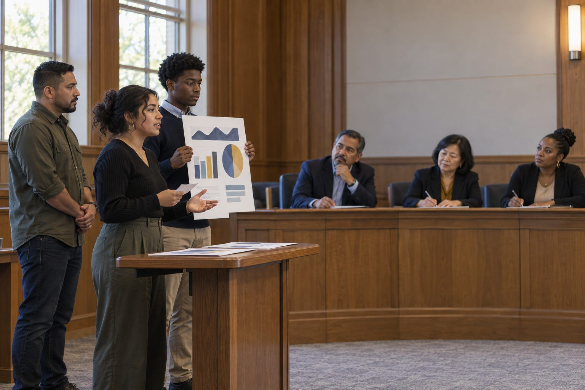

Student learning · Grades 9–12, Higher Ed · 180 minutes
Policy Makers
Student teams research, draft, and pitch an AI and technology-use policy proposal to a mock board, and must pass the same five-question check real leaders use.
Rules about AI and technology use are often written for students without students in the room. In this three-session project, students become policy makers. They analyze an outdated fictional acceptable-use policy, gather perspectives from classmates and staff, and draft a focused proposal on one issue (AI in coursework, phones, data privacy, or accessibility). Every proposal must pass the five-question check that school leaders use: What is the vision? What evidence will guide us? What changes in instruction? Who might be left out? How will families understand the change? Teams then present to a mock board that asks hard questions. The strongest proposals can go to the real one.
In this packet
- Handout A: Harmon Creek High School Technology Policy (2019 Excerpt) and Stakeholder Voices (reading)
- Handout B: Policy Proposal Builder (worksheet)
- Handout C: Mock Board Scoring Rubric (rubric)
TCEA ELE indicators
- AI2.1 I know how to apply ethical principles when using or developing AI for education.
- S3.2 I can communicate my ideas clearly to others.
- S5.1 I know how to approach complex problems systematically.
- S3.3 I am aware of the value of diverse perspectives in group work.
- AI2.2 I can identify potential ethical issues in AI applications and propose solutions.
Full facilitator guide: mglearn.github.io/eles/activities/student-voice-policy-makers.html
Handout A for Policy Makers
Harmon Creek High School Technology Policy (2019 Excerpt) and Stakeholder Voices
Harmon Creek and everyone quoted are fictional. Mark each policy rule: ✓ still works · ? unclear today · ✗ outdated or unfair. Then read the voices.
1Rule 1. Personal electronic devices, including phones, tablets, and laptops, must be turned off and stored in lockers during the school day. Devices seen during class will be confiscated until the end of the day.
2Rule 2. Students may use school computers only for assignments directed by the teacher. Any other use is prohibited.
3Rule 3. Students may not access websites that are not related to schoolwork. The school filter will block inappropriate sites.
4Rule 4. Plagiarism, defined as copying another person's words or ideas without credit, will result in a zero on the assignment and a referral to the assistant principal.
5Rule 5. Students must protect their passwords and may not share personal information about themselves or others online.
6Rule 6. Violations of this policy will result in loss of technology privileges.
7Voice · Ninth-grade student: "My math teacher lets us use AI to check our steps, but my English teacher says any AI is cheating. I honestly don't know what's allowed in which class, and I'm scared to ask."
8Voice · English teacher: "I want students to struggle through their own writing. I'm not against technology, but I need to be able to see their thinking, and right now I can't tell what's theirs." Voice · Parent: "We don't have reliable internet at home. If assignments start requiring AI tools, my kids will fall behind."
9Voice · Student with a reading disability: "I use text-to-speech on my phone to read long assignments. Under Rule 1 it has to stay in my locker, so I have to ask for a special pass every time." Voice · Librarian: "Students need to learn to evaluate information, including AI answers. Blocking everything doesn't teach them how."
10Voice · Assistant principal: "Whatever we adopt has to be clear enough that a substitute teacher could enforce it fairly and that a family could understand it the first time they read it."
Handout B for Policy Makers
Policy Proposal Builder
One per team. Each policy statement should be specific enough that a student could follow it and a teacher could check it.
Our issue, the problem in one sentence, and the stakeholder evidence that shows it's a problem:
Our proposal: three to five specific policy statements, each followed by "because…"
Five-question check 1 and 2. What is the vision (one sentence)? What evidence will guide us, both now and to measure whether it works later?
Five-question check 3. What changes in instruction? What would teachers and students do differently in class?
Five-question check 4. Who might be left out (students without home internet, students with disabilities, emergent bilinguals, others)? What does our proposal do about it?
Five-question check 5. How will families understand the change? (format, languages, where they'll hear about it)
Red team: the strongest objection we heard, and how we revised (or why we didn't):
Handout C for Policy Makers
Mock Board Scoring Rubric
Board members score each team; teams also self-assess before the hearing.
| Criterion | Beginning | Developing | Proficient | Exemplary |
|---|---|---|---|---|
| Understanding the problem | Problem is unclear or assumed. | Problem is stated but not broken into parts. | Problem is broken into parts with specific affected groups. | Problem analysis reveals a cause or group others had missed. |
| Use of evidence | Opinion only. | One source of evidence, loosely connected. | Multiple stakeholder perspectives directly support the proposal. | Evidence includes conflicting perspectives, and the proposal explains how it weighs them. |
| Specific, ethical policy | Vague values or blanket bans. | Some specific statements; reasons are thin. | Specific, followable statements with reasons, balancing learning, fairness, and privacy. | Statements anticipate edge cases (substitutes, accommodations, first violations) and remain fair. |
| Five-question check | Addresses one or two questions. | Addresses all five briefly. | Addresses all five, with concrete plans for who might be left out and for families. | Includes a way to measure whether the policy worked and a plan to revise it. |
| Clear communication | Hard to follow; one speaker. | Understandable, but answers to questions are unclear. | Clear, organized presentation; every member contributes; answers questions with evidence. | Persuasive and concise; answers hard questions calmly and adjusts the proposal in response. |